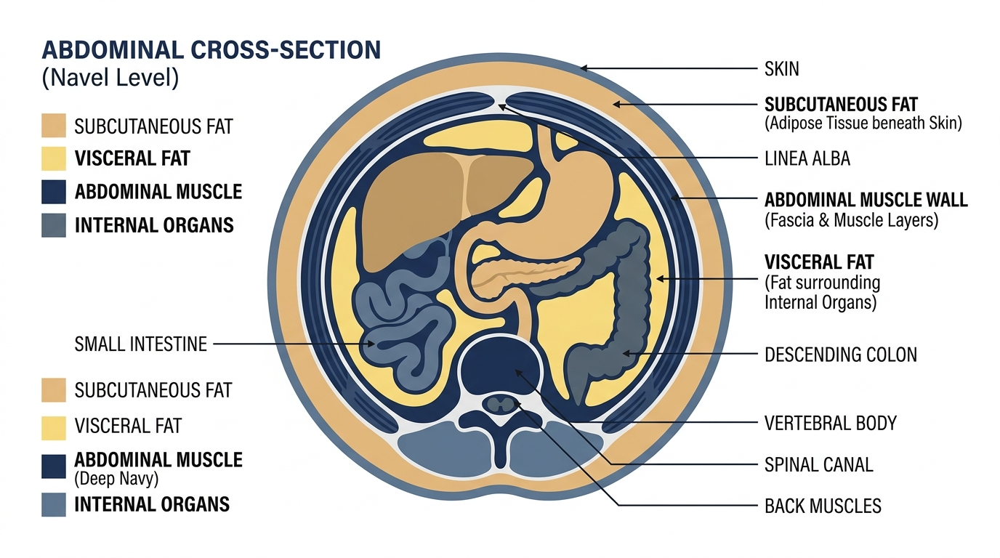

There is a distinct demographic of men and women over 40 who represent the greatest paradox in modern fitness.
They are not sedentary. They do not eat fast food. They track their macronutrients, lift weights four mornings a week, and log 10,000 steps daily.
Yet when they look in the full-length mirror, their midsection tells a completely contradictory story:
- Their chest, arms, and back remain tight and defined.
- Their abdominal wall feels rock-solid to the touch.
- Yet their stomach protrudes outward like an inflated dome, making button-down shirts pull and waistbands dig in uncomfortably.
When they ask their personal trainer or primary care physician, they receive the same outdated advice: "You just need a steeper calorie deficit and more cardio."
That advice is not just incorrect—it is biologically impossible for this specific condition. Abdominal exercises strengthen the muscle wall, but visceral fat is trapped BEHIND it.
The Physics of the Abdominal Wall and the 14% Decade Cliff
When you perform crunches or planks, you strengthen the Rectus Abdominis and Transverse Abdominis muscles.
If the fat pushing your belly out were located in front of those muscles (subcutaneous fat), strengthening the abdominal wall would pull your waist inward.
But when the fat is packed BEHIND the muscle wall (Visceral Adipose Tissue / VAT), a tighter, stronger muscle wall simply gets pushed outward by the expanding volume of organ fat inside the peritoneal cavity.
The Clinical Solution: Tesamorelin & Targeted Visceral Lipolysis
To break the visceral fat lock, endocrinologists synthesized Tesamorelin—a 44-amino-acid peptide analog of human GHRH, modified with a trans-3-hexenoyl group for prolonged receptor affinity.
The 3-stage biological mechanism functions with surgical precision:
- 1. Selective Pituitary Binding: Binds to GHRH receptors on anterior pituitary somatotrophs without suppressing natural hormone production.
- 2. Restoring Deep-Sleep Secretory Pulses: Prompts natural pulsatile growth hormone release during Stage 3/4 slow-wave sleep.
- 3. Beta-3 Adrenergic Activation: Directly mobilizes triglycerides locked in deep visceral adipocytes while preserving lean skeletal muscle tissue.
Computed Tomography (CT) Evidence from Landmark Trials
In multi-center, randomized Phase 3 trials published in major medical journals:
- 15% to 20% Reduction in VAT: Measured at the L4-L5 lumbar cross-section via high-resolution CT scans.
- Lean Body Mass Increase: Patients gained metabolically active lean muscle while losing visceral abdominal circumference.
- Triglycerides & Lipid Ratios Normalized: Visceral fat oxidation cleared toxic fatty acid overflow from the liver and portal vein.
Frequently Asked Questions
Q: Why won't intense ab workouts burn this fat?
A: Spot reduction is a myth. Crunches work the abdominal muscle wall, but visceral fat is packed *inside the abdominal cavity behind the muscle wall*. It answers to systemic endocrine signaling, not localized muscle contractions.
Q: Is Tesamorelin safe for individuals with normal blood sugar?
A: Yes. Because Tesamorelin stimulates natural physiological pulsatile release rather than flooding the bloodstream with continuous synthetic HGH, it preserves insulin sensitivity and has a well-documented safety profile.
100% Clinical Efficacy Guarantee
If your clinical practitioner determines you qualify and you do not observe measurable reductions in your visceral waist profile within 60 days of adherence, contact your clinical coordinator for a complete protocol refund.
Assess Your Abdominal Visceral Profile
Complete the 2-minute diagnostic self-assessment below to check your qualification for the physician-guided Tesamorelin protocol.
START CLINICAL ASSESSMENT →